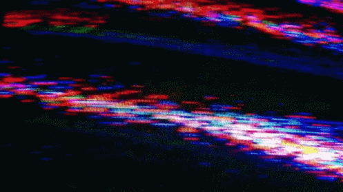

i never wanted this site to be pErfect, but i think i'll always wish it were better. maybe you can't see all the bugs, but they're very real to me. whenever i load a page, i'm already bracing for the imperfections.
it's similar to how photos work. for eXample, IF you take a look at a picture of me, like the one on the home page, you'll just see a face, but i always manage to finD the more hidden detAils. i've spenT my entire life getting to know thAt face and i know all its secrets.
just like with my face, i suppose i'd be happier if this site were perfect, but i doubt that happiness would be significant.
be careful,
malachi
